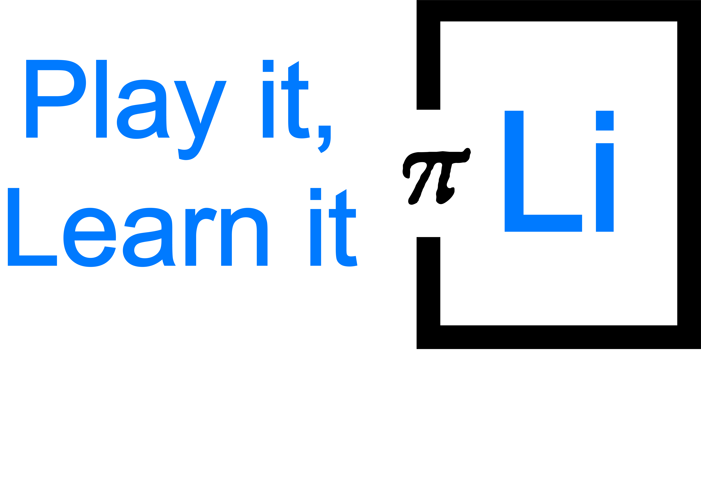

Home
Problem
App
Home
Problem
App
References
Craftedpixxxels (2019) Forum [Medium]. Tilgjengelig fra:
https://dribbble.com/shots/5847615-Forum/attachments
(Hentet: 27.09.2019).
Forum (n/a) [Medium]. Tilgjengelig fra:
https://pixabay.com/illustrations/iphone-apple-smartphone-new-xr-3676319/
(Hentet: 27.09.2019)
macbook (2018) [Medium]. Tilgjengelig fra:
https://pixabay.com/illustrations/macbook-laptop-apple-computer-mac-3404862/
(Hentet: 01.10.2019)
iphone (2018) [Medium] Tilgjengelig fra:
https://cdn.pixabay.com/photo/2018/09/14/05/59/iphone-3676319_960_720.png
(Hentet: 01.10.2019)
Wikimedia Commons (2012) Iraqi refugee children, Damascus, Syria [Medium] Tilgjengelig fra:
https://commons.wikimedia.org/wiki/File:Iraqi_refugee_children,_Damascus,_Syria.jpg
(Hentet: 01.10.2019)
Wikimedia Commons (2013) Getting Syrias children back to school in Lebanon [Medium] Tilgjengelig fra:
https://commons.wikimedia.org/wiki/File:Getting_Syrias_children_back_to_school_in_Lebanon_(11174139473).jpg?fbclid=IwAR00PsCVZq2oNjKNKnumBHynM0crrYER-lHUpBN7KsJWoNlrtsTaHMYMG0Y
(Hentet: 01.10.2019)
Wikimedia Commons (2013) Google Play Store badge EN [Medium] Tilgjengelig fra:
https://upload.wikimedia.org/wikipedia/commons/7/78/Google_Play_Store_badge_EN.svg
(Hentet: 27.09.2019)
Wikimedia Commons (2016) Available on the App Store [Medium] Tilgjengelig fra:
https://upload.wikimedia.org/wikipedia/commons/5/5d/Available_on_the_App_Store_%28black%29.png
(Hentet: 27.09.2019)
Quote av O. Fred Donaldson – Tilgjengelig fra
https://www.teacherswithapps.com/67552-2/
(hentet 01.10.2019)